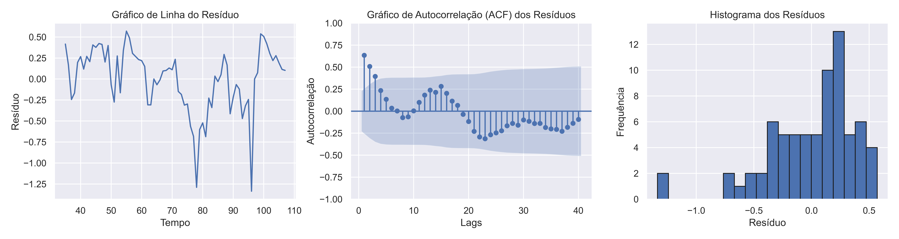
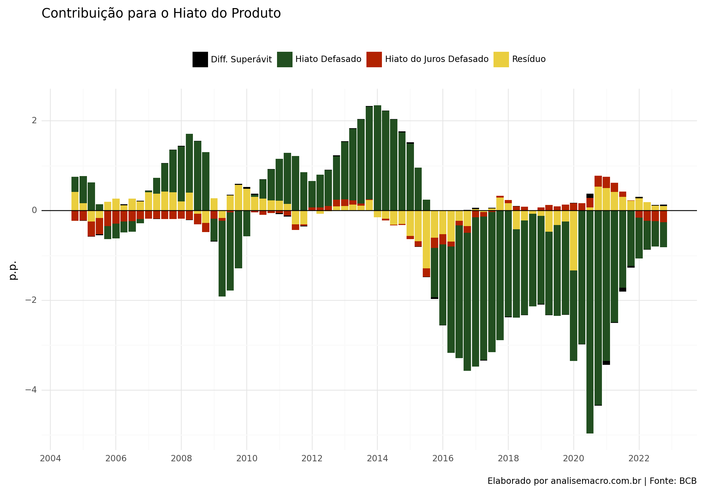

O objetivo do exercício será estimar uma versão da Curva IS do Modelo Semiestrutural de Pequeno Porte do BCB descrito nesse Relatório, conforme descrito abaixo:
Basicamente, a Curva IS estimada irá descrever a dinâmica do hiato do produto com base em suas próprias defasagens, da taxa de juros real ex-ante e da variação do superávit primário.
Dados
O Hiato do produto é aquele construído pelo Banco Central, disponibilizado nos anexos estatísticos do Relatório de Inflação.
O hiato do juros é criado pela diferença entre o juros real ex-ante e o juro neutro, a taxa de juros real obtida pela taxa de juros nominal swap pré-DI de 360 dias deflacionada pela expectativa de inflação relativa ao período de vigência do contrato, o juro de equilíbrio segue uma proxy definida no Relatório de Inflação de dezembro de 2019, dada pela Selic esperada para t+3 deflacionada pela inflação espera para t+3.
A variação do superávit primário utilizada é aquela proveniente do resultado fiscal estrutural construído pela SPE.
Como estimamos a curva IS?
A Curva IS é estimada com base na equação descrita no início usando 2SLS com matriz de covariância robusta para evitar problemas na inferência dos parâmetros causados por autocorrelação e heterocedasticidade nos resíduos. Há também a adição de duas dummies para levar em consideração a crise de 2008 e a pandemia de Covid.
Código
from plotnine import*from bcb import sgs # Importar dados do SGSfrom bcb import Expectativas # Importar dados de Expectativasimport ipeadatapy as ip # importa dados do IPEADATAimport pandas as pd # Manipulação de dadosimport numpy as np # Manipulação e cálculo de dadosfrom functools importreduce# módulo para juntar dfsfrom datetime import datetime # módulo para trabalhar com datafrom linearmodels.iv import IV2SLS # Modelo IV2SLSimport statsmodels.api as smimport matplotlib.pyplot as pltimport seaborn as snssns.set()
2.1 Hiato do Produto
Código
# Coleta e tratamento do Hiato do Produto da IFIhiato = ( pd.read_excel("https://www12.senado.leg.br/ifi/dados/arquivos/estimativas-do-hiato-do-produto-ifi/@@download/file/Hiato%20do%20Produto%20IFI.xlsx", sheet_name ="Hiato do Produto", skiprows =1 ) .assign(date_quarter =lambda x: pd.PeriodIndex(x['Trim-Ano'], freq ='Q'), hiato_ifi =lambda x: x.Hiato.astype(float) *100) .loc[:, ['date_quarter', 'hiato_ifi']] )
Código
hiato
date_quarter
hiato_ifi
0
1996Q1
-0.86
1
1996Q2
-0.71
2
1996Q3
0.73
3
1996Q4
0.02
4
1997Q1
0.19
...
...
...
107
2022Q4
0.10
108
2023Q1
0.56
109
2023Q2
0.96
110
2023Q3
0.76
111
2023Q4
0.47
112 rows × 2 columns
Código
# Coleta e tratamento do Hiato do Produto do BChiato_bcb = ( pd.read_excel("https://www.bcb.gov.br/content/ri/relatorioinflacao/202403/ri202403anp.xlsx", sheet_name ="Graf 2.2.4", skiprows =8 ) .assign(date_quarter =lambda x: pd.PeriodIndex(x['Trimestre'], freq ='Q'), hiato_bcb =lambda x: x.Hiato.astype(float)) .loc[:, ['date_quarter', 'hiato_bcb']] )hiato_bcb
# Cria uma função para a equação de fisherdef fisher(juros, inflacao):""" Calcula a taxa de juros real neutra usando a equação de Fisher. Args: juros (float): A taxa de juros nominal em porcentagem (%). inflacao (float): A taxa de inflação em porcentagem (%). Returns: float: A taxa de juros real em porcentagem (%). Raises: TypeError: Se os argumentos `juros` e `inflacao` não forem do tipo `float`. Exemplo: >>> fisher(10, 3) 6.796116504854364 """ juros = ((((1+ (juros /100)) / (1+ inflacao /100))) -1) *100return juros
Código
# Taxa referencial - swaps - DI pré-360 dias - média do período (IPEADATA/B3)swaps = ( ip.timeseries('BMF12_SWAPDI36012') .rename(columns = {'VALUE ((% a.a.))' : 'swaps'})[['swaps']] )# Muda a coluna de data para o índiceswaps = swaps.set_index(swaps.index.to_period('M'))swaps
swaps
DATE
1999-09
25.620000
1999-10
25.020000
1999-11
23.790000
1999-12
22.680000
2000-01
21.240000
...
...
2023-11
10.649500
2023-12
10.231053
2024-01
10.046364
2024-02
9.933158
2024-03
9.835500
295 rows × 1 columns
Código
# Instância a classe de Expectativasem = Expectativas()# Obtém o endpoint da Expectativa de Inflação Acumulada em 12 mesesexp_ipca_raw = em.get_endpoint('ExpectativasMercadoInflacao12Meses')# Expectativa média do IPCA - tx. acumulada para os próximos 12 meses (Expectativas)ipca_expec_12m_raw = ( exp_ipca_raw.query() .filter(exp_ipca_raw.Suavizada =='S', exp_ipca_raw.baseCalculo ==0, exp_ipca_raw.Indicador =='IPCA') .collect() )
Código
# Muda a classe da coluna de data para date time e period, renomeia as colunas e seleciona a coluna dos valoresipca_expec_12m = ( ipca_expec_12m_raw# altera o tipo da coluna de data para datetime .set_index(pd.to_datetime(ipca_expec_12m_raw['Data'])# altera o tipo da coluna para period .dt.to_period('D')) .resample('M') .agg({'Mediana':'mean'}) .rename(columns = {'Mediana' : 'ipca_exp_12m'}) .loc[:, ['ipca_exp_12m']] )
Código
ipca_expec_12m
ipca_exp_12m
Data
2001-12
5.030000
2002-01
4.733636
2002-02
4.644737
2002-03
4.721500
2002-04
4.790000
...
...
2023-12
3.896605
2024-01
3.862150
2024-02
3.720774
2024-03
3.489515
2024-04
3.502650
269 rows × 1 columns
Código
# Junta o df do swap e expectativas do ipcaex_ante = ipca_expec_12m.join(swaps)# Calcula o juro real ex-anteex_ante = ex_ante.assign(juro_real =lambda x: fisher(x.swaps, x.ipca_exp_12m))# Trimestraliza o juro realjuro_real = ( ex_ante .assign(date =lambda x: x.index.to_timestamp(), date_quarter =lambda x: pd.PeriodIndex(x['date'], freq ='Q')) .reset_index() .loc[:, ['date_quarter', 'juro_real']] .groupby(by ='date_quarter') .agg(juro_real_ex_ante = ('juro_real', 'mean')) .reset_index() )
2.4 Proxy juro neutro
Código
# Cria função para calcular a data de referência a partir da data de observaçãodef reference_date(date: str):""" Calcula a data de referência adicionando 3 anos a uma data de observação. Args: date (str): Uma string que representa uma data no formato 'YYYY-MM-DD'. Returns: List[str]: Uma lista de strings com a data de referência no formato 'YYYY'. Raises: TypeError: Se o argumento `date` não for uma string. Examples: >>> reference_date('2022-01-01') ['2025'] """ years = pd.DatetimeIndex(date).year.values +3# Calcula 3 anos a frente years = years.tolist() years = [str(i) for i in years]return years
Código
# Conecta com a API das Expectativas de Mercado Anuaisexp_anual = em.get_endpoint('ExpectativasMercadoAnuais')# Importa as expectativas do IPCA anuais e realiza os filtrosipca_e_t3_raw = ( exp_anual.query() .filter(exp_anual.Indicador =="IPCA") .filter(exp_anual.baseCalculo ==0) .select(exp_anual.Data, exp_anual.Mediana, exp_anual.DataReferencia) .collect() )
Código
# Realiza o filtro para a data de referência 3 anos a frente das obs.ipca_e_t3 = ipca_e_t3_raw[( ipca_e_t3_raw .DataReferencia == reference_date(ipca_e_t3_raw['Data']) ) ]# Renomeia as colunasipca_e_t3 = ipca_e_t3.rename(columns = {'Data' : 'date','Mediana' : 'ipca_e'}).drop(['DataReferencia'], axis =1)
Código
# Importa as expectativas da Selic anuais e realiza os filtrosselic_e_t3_raw = ( exp_anual.query() .filter(exp_anual.Indicador =="Selic") .filter(exp_anual.baseCalculo ==0) .select(exp_anual.Data, exp_anual.Mediana, exp_anual.DataReferencia) .collect() )# Realiza o filtro para a data de referência 3 anos a frente das obs.selic_e_t3 = selic_e_t3_raw[( selic_e_t3_raw .DataReferencia == reference_date(selic_e_t3_raw['Data']) ) ]# Renomeia as colunasselic_e_t3 = selic_e_t3.rename(columns = {'Data' : 'date','Mediana' : 'selic_e'}).drop(['DataReferencia'], axis =1)
Código
selic_e_t3
date
selic_e
290
2000-08-07
10.25
294
2000-08-08
10.65
298
2000-08-09
10.65
302
2000-08-10
10.65
306
2000-08-11
11.00
...
...
...
29430
2024-04-08
8.50
29435
2024-04-09
8.50
29440
2024-04-10
8.50
29445
2024-04-11
8.50
29450
2024-04-12
8.50
5729 rows × 2 columns
Código
# Junta os dados em um data frameproxy_neutro_m = ( pd.merge(left = ipca_e_t3, right = selic_e_t3, how ='inner', on ='date') .assign(neutro =lambda x : fisher(x.selic_e, x.ipca_e)) )
# lista de dataframesdfs = [hiato, hiato_bcb, sup, juro_real, proxy_neutro]# reduz os dataframes pela chave 'date_quarter' com left joindados_reg =reduce(lambda left, right: pd.merge(left, right, on ='date_quarter', how ='left'), dfs).dropna()
# Cria df com o resultadoresultado = pd.DataFrame({'Ajuste' : model.fitted_values.fitted_values,'Resíduo' : model.resids,'Hiato' : dados_reg.hiato_bcb.values,'Data' : dados_reg.date_quarter.dt.to_timestamp(),"Hiato Defasado": model.params.hiato_lag1 * dados_reg.hiato_lag1,"Hiato do Juros Defasado": model.params.hiato_juros_lag1 * dados_reg.hiato_juros_lag1,"Diff. Superávit": model.params.sup_diff_lag1 * dados_reg.sup_diff_lag1})
Código
# Altera para longresultado_fit_long = resultado[['Data', 'Ajuste', 'Hiato']].melt(id_vars = ['Data'])# Criação do gráfico( ggplot(resultado_fit_long, aes(x ='Data', y ='value', color ='variable')) + geom_line(size =1) + theme_minimal() + scale_color_manual(values = ['#b22200', '#282f6b']) + scale_x_datetime(date_breaks ='2 years', date_labels ="%Y") + labs( title ='Ajuste da Curva IS estimada x Hiato do Produto (BCB)', x ='', y ='', color ="", caption ='Elaborado por analisemacro.com.br | Fonte: BCB')+ theme(legend_position ='bottom', figure_size = (10, 7)) )

Código
# Cria uma figura com 1 linha e 3 colunas para os três gráficosfig, axes = plt.subplots(nrows=1, ncols=3, figsize=(15, 4))# Gráfico de Linha do Resíduoaxes[0].plot(resultado.Resíduo)axes[0].set_title('Gráfico de Linha do Resíduo')axes[0].set_xlabel('Tempo')axes[0].set_ylabel('Resíduo')# Gráfico de Autocorrelação (ACF)sm.graphics.tsa.plot_acf(resultado.Resíduo, lags=40, ax=axes[1], zero =False)axes[1].set_title('Gráfico de Autocorrelação (ACF) dos Resíduos')axes[1].set_xlabel('Lags')axes[1].set_ylabel('Autocorrelação')# Gráfico de Histogramaaxes[2].hist(resultado.Resíduo, bins=20, edgecolor='k')axes[2].set_title('Histograma dos Resíduos')axes[2].set_xlabel('Resíduo')axes[2].set_ylabel('Frequência')plt.tight_layout() # Para garantir que os gráficos não se sobreponhamplt.show()

Código
resultado_fit_plot_long = resultado[['Data', 'Hiato Defasado', 'Hiato do Juros Defasado', 'Diff. Superávit', 'Resíduo']].melt(id_vars = ['Data'])( ggplot(resultado_fit_plot_long, aes(x ='Data', y ='value', fill ='variable'))+ geom_col() + geom_hline(yintercept =0, colour ='black') + theme_minimal() + scale_fill_manual(values = ['black', '#224f20', '#b22200', '#eace3f']) + scale_x_datetime(date_breaks ='2 years', date_labels ="%Y") + labs( title ='Contribuição para o Hiato do Produto', x ='', y ='p.p.', fill ="", caption ='Elaborado por analisemacro.com.br | Fonte: BCB')+ theme(legend_position ='top', figure_size = (10, 7)))

Código fonte
---title: "Como construir uma Curva IS no Python?"date: "2024-02-28"date-modified: "2024-04-18"author: "Luiz Henrique"description: "Construindo um modelo da Curva IS usando o Python"categories: [Macroeconometria, Macroeconomia, Python, Português]image: "imgs/curva-is.png"aliases: - /posts/macroeconometria/modelos/index.html---O objetivo do exercício será estimar uma versão da Curva IS do Modelo Semiestrutural de Pequeno Porte do BCB descrito nesse [Relatório](https://www.bcb.gov.br/htms/relinf/port/2017/06/ri201706b7p.pdf), conforme descrito abaixo:\begin{align}h_t = \beta_0 + \sum_{i>0} \beta_{1i} h_{t-1} + \sum_{j>0} \beta_{2j} r_{t-j} +\sum_{k > 0} \beta_{3k} \Delta sup_{t-k} + u_t\end{align}Basicamente, a Curva IS estimada irá descrever a dinâmica do hiato do produto com base em **suas próprias defasagens**, da **taxa de juros real ex-ante** e da **variação do superávit primário**.## DadosO Hiato do produto é aquele construído pelo Banco Central, disponibilizado nos anexos estatísticos do Relatório de Inflação.O hiato do juros é criado pela diferença entre o juros real ex-ante e o juro neutro, a taxa de juros real obtida pela taxa de juros nominal swap pré-DI de 360 dias deflacionada pela expectativa de inflação relativa ao período de vigência do contrato, o juro de equilíbrio segue uma proxy definida no Relatório de Inflação de dezembro de 2019, dada pela Selic esperada para t+3 deflacionada pela inflação espera para t+3.A variação do superávit primário utilizada é aquela proveniente do resultado fiscal estrutural construído pela SPE.## Como estimamos a curva IS?A Curva IS é estimada com base na equação descrita no início usando 2SLS com matriz de covariância robusta para evitar problemas na inferência dos parâmetros causados por autocorrelação e heterocedasticidade nos resíduos. Há também a adição de duas dummies para levar em consideração a crise de 2008 e a pandemia de Covid.```{python}from plotnine import*from bcb import sgs # Importar dados do SGSfrom bcb import Expectativas # Importar dados de Expectativasimport ipeadatapy as ip # importa dados do IPEADATAimport pandas as pd # Manipulação de dadosimport numpy as np # Manipulação e cálculo de dadosfrom functools importreduce# módulo para juntar dfsfrom datetime import datetime # módulo para trabalhar com datafrom linearmodels.iv import IV2SLS # Modelo IV2SLSimport statsmodels.api as smimport matplotlib.pyplot as pltimport seaborn as snssns.set()```## 2.1 Hiato do Produto```{python}# Coleta e tratamento do Hiato do Produto da IFIhiato = ( pd.read_excel("https://www12.senado.leg.br/ifi/dados/arquivos/estimativas-do-hiato-do-produto-ifi/@@download/file/Hiato%20do%20Produto%20IFI.xlsx", sheet_name ="Hiato do Produto", skiprows =1 ) .assign(date_quarter =lambda x: pd.PeriodIndex(x['Trim-Ano'], freq ='Q'), hiato_ifi =lambda x: x.Hiato.astype(float) *100) .loc[:, ['date_quarter', 'hiato_ifi']] )``````{python}hiato``````{python}# Coleta e tratamento do Hiato do Produto do BChiato_bcb = ( pd.read_excel("https://www.bcb.gov.br/content/ri/relatorioinflacao/202403/ri202403anp.xlsx", sheet_name ="Graf 2.2.4", skiprows =8 ) .assign(date_quarter =lambda x: pd.PeriodIndex(x['Trimestre'], freq ='Q'), hiato_bcb =lambda x: x.Hiato.astype(float)) .loc[:, ['date_quarter', 'hiato_bcb']] )hiato_bcb```## 2.2 Resultado estrutural do setor público```{python}# Coleta e tratamento do resultado estrutural do setor públicosup = ( pd.read_excel("https://www.gov.br/fazenda/pt-br/assuntos/politica-fiscal/atuacao-spe/resultado-fiscal-estrutural/tabelas-de-dados/series-historicas-rfe-2023-2022-versao-final.xlsx", sheet_name ="RFE - Trimestral", skiprows =1 ) .assign(date_quarter =lambda x: pd.PeriodIndex( x['Acum. 4 Trimestres'].str.slice_replace(start =4, stop =5, repl ="-Q"), freq ='Q' ), sup =lambda x: (((x['Resultado Estrutural.2'].astype(float) +1) ** (1/4)) -1) *100 ) .loc[:, ['date_quarter', 'sup']] )``````{python}sup```## 2.3 Juro Real```{python}# Cria uma função para a equação de fisherdef fisher(juros, inflacao):""" Calcula a taxa de juros real neutra usando a equação de Fisher. Args: juros (float): A taxa de juros nominal em porcentagem (%). inflacao (float): A taxa de inflação em porcentagem (%). Returns: float: A taxa de juros real em porcentagem (%). Raises: TypeError: Se os argumentos `juros` e `inflacao` não forem do tipo `float`. Exemplo: >>> fisher(10, 3) 6.796116504854364 """ juros = ((((1+ (juros /100)) / (1+ inflacao /100))) -1) *100return juros``````{python}# Taxa referencial - swaps - DI pré-360 dias - média do período (IPEADATA/B3)swaps = ( ip.timeseries('BMF12_SWAPDI36012') .rename(columns = {'VALUE ((% a.a.))' : 'swaps'})[['swaps']] )# Muda a coluna de data para o índiceswaps = swaps.set_index(swaps.index.to_period('M'))swaps``````{python}# Instância a classe de Expectativasem = Expectativas()# Obtém o endpoint da Expectativa de Inflação Acumulada em 12 mesesexp_ipca_raw = em.get_endpoint('ExpectativasMercadoInflacao12Meses')# Expectativa média do IPCA - tx. acumulada para os próximos 12 meses (Expectativas)ipca_expec_12m_raw = ( exp_ipca_raw.query() .filter(exp_ipca_raw.Suavizada =='S', exp_ipca_raw.baseCalculo ==0, exp_ipca_raw.Indicador =='IPCA') .collect() )``````{python}# Muda a classe da coluna de data para date time e period, renomeia as colunas e seleciona a coluna dos valoresipca_expec_12m = ( ipca_expec_12m_raw# altera o tipo da coluna de data para datetime .set_index(pd.to_datetime(ipca_expec_12m_raw['Data'])# altera o tipo da coluna para period .dt.to_period('D')) .resample('M') .agg({'Mediana':'mean'}) .rename(columns = {'Mediana' : 'ipca_exp_12m'}) .loc[:, ['ipca_exp_12m']] )``````{python}ipca_expec_12m``````{python}# Junta o df do swap e expectativas do ipcaex_ante = ipca_expec_12m.join(swaps)# Calcula o juro real ex-anteex_ante = ex_ante.assign(juro_real =lambda x: fisher(x.swaps, x.ipca_exp_12m))# Trimestraliza o juro realjuro_real = ( ex_ante .assign(date =lambda x: x.index.to_timestamp(), date_quarter =lambda x: pd.PeriodIndex(x['date'], freq ='Q')) .reset_index() .loc[:, ['date_quarter', 'juro_real']] .groupby(by ='date_quarter') .agg(juro_real_ex_ante = ('juro_real', 'mean')) .reset_index() )```## 2.4 Proxy juro neutro```{python}# Cria função para calcular a data de referência a partir da data de observaçãodef reference_date(date: str):""" Calcula a data de referência adicionando 3 anos a uma data de observação. Args: date (str): Uma string que representa uma data no formato 'YYYY-MM-DD'. Returns: List[str]: Uma lista de strings com a data de referência no formato 'YYYY'. Raises: TypeError: Se o argumento `date` não for uma string. Examples: >>> reference_date('2022-01-01') ['2025'] """ years = pd.DatetimeIndex(date).year.values +3# Calcula 3 anos a frente years = years.tolist() years = [str(i) for i in years]return years``````{python}# Conecta com a API das Expectativas de Mercado Anuaisexp_anual = em.get_endpoint('ExpectativasMercadoAnuais')# Importa as expectativas do IPCA anuais e realiza os filtrosipca_e_t3_raw = ( exp_anual.query() .filter(exp_anual.Indicador =="IPCA") .filter(exp_anual.baseCalculo ==0) .select(exp_anual.Data, exp_anual.Mediana, exp_anual.DataReferencia) .collect() )``````{python}# Realiza o filtro para a data de referência 3 anos a frente das obs.ipca_e_t3 = ipca_e_t3_raw[( ipca_e_t3_raw .DataReferencia == reference_date(ipca_e_t3_raw['Data']) ) ]# Renomeia as colunasipca_e_t3 = ipca_e_t3.rename(columns = {'Data' : 'date','Mediana' : 'ipca_e'}).drop(['DataReferencia'], axis =1)``````{python}# Importa as expectativas da Selic anuais e realiza os filtrosselic_e_t3_raw = ( exp_anual.query() .filter(exp_anual.Indicador =="Selic") .filter(exp_anual.baseCalculo ==0) .select(exp_anual.Data, exp_anual.Mediana, exp_anual.DataReferencia) .collect() )# Realiza o filtro para a data de referência 3 anos a frente das obs.selic_e_t3 = selic_e_t3_raw[( selic_e_t3_raw .DataReferencia == reference_date(selic_e_t3_raw['Data']) ) ]# Renomeia as colunasselic_e_t3 = selic_e_t3.rename(columns = {'Data' : 'date','Mediana' : 'selic_e'}).drop(['DataReferencia'], axis =1)``````{python}selic_e_t3``````{python}# Junta os dados em um data frameproxy_neutro_m = ( pd.merge(left = ipca_e_t3, right = selic_e_t3, how ='inner', on ='date') .assign(neutro =lambda x : fisher(x.selic_e, x.ipca_e)) )``````{python}# Trimestraliza o juro neutroproxy_neutro = ( proxy_neutro_m .assign(date_quarter =lambda x: pd.PeriodIndex(x['date'], freq ='Q')) .loc[:, ['date_quarter', 'neutro']] .groupby(by ='date_quarter') .agg(neutro = ('neutro', 'mean')) .reset_index())proxy_neutro```# Resultados```{python}# lista de dataframesdfs = [hiato, hiato_bcb, sup, juro_real, proxy_neutro]# reduz os dataframes pela chave 'date_quarter' com left joindados_reg =reduce(lambda left, right: pd.merge(left, right, on ='date_quarter', how ='left'), dfs).dropna()``````{python}dados_reg``````{python}# Calcula as defasagensdados_reg['hiato_lag1'] = dados_reg['hiato_bcb'].shift(1)dados_reg['hiato_lag2'] = dados_reg['hiato_bcb'].shift(2)dados_reg['sup_diff'] = dados_reg['sup'].diff()dados_reg['sup_diff_lag1'] = dados_reg['sup_diff'].shift(1)dados_reg['sup_diff_lag2'] = dados_reg['sup_diff'].shift(2)dados_reg['sup_diff_lag3'] = dados_reg['sup_diff'].shift(3)dados_reg['juro_real_ex_ante_lag1'] = dados_reg['juro_real_ex_ante'].shift(1)dados_reg['juro_real_ex_ante_lag2'] = dados_reg['juro_real_ex_ante'].shift(2)dados_reg['neutro_lag1'] = dados_reg['neutro'].shift(1)dados_reg['neutro_lag2'] = dados_reg['neutro'].shift(2)dados_reg['hiato_juros'] = dados_reg.juro_real_ex_ante - dados_reg.neutrodados_reg['hiato_juros_lag1'] = dados_reg['hiato_juros'].shift(1)dados_reg['hiato_juros_lag2'] = dados_reg['hiato_juros'].shift(2)dados_reg['hiato_lag3'] = dados_reg['hiato_bcb'].shift(3)dados_reg['hiato_lag4'] = dados_reg['hiato_bcb'].shift(4)dados_reg['sup_lag1'] = dados_reg['sup'].shift(1)# Criar variáveis dummy trimestrais usando pd.get_dummiest_dummies = pd.get_dummies(dados_reg['date_quarter'].dt.quarter, prefix ='trimestre', dtype =int)dados_reg['d_subprime'] = dados_reg['date_quarter'].isin(pd.PeriodIndex(['2008Q4', "2009Q1"], freq ='Q'))dados_reg['d_covid'] = dados_reg['date_quarter'].isin(pd.PeriodIndex(['2020Q2'], freq ='Q'))# Concatenar as variáveis dummy com o DataFrame originaldados_reg = pd.concat([dados_reg, t_dummies], axis=1).dropna()``````{python}# Retira os dados faltantesdados_reg.dropna(inplace =True)``````{python}# Estimando o modelo 2SLS usando a função IV2SLS.from_formulamodel = IV2SLS.from_formula('hiato_bcb ~ 1 + d_subprime + d_covid + [hiato_lag1 + hiato_juros_lag1 + sup_diff_lag1 ~ hiato_lag1 + juro_real_ex_ante_lag1 + neutro_lag2 + sup_diff_lag1]', data = dados_reg).fit(cov_type='kernel')# Imprimindo o sumário do modeloprint(model.summary)``````{python}# Cria df com o resultadoresultado = pd.DataFrame({'Ajuste' : model.fitted_values.fitted_values,'Resíduo' : model.resids,'Hiato' : dados_reg.hiato_bcb.values,'Data' : dados_reg.date_quarter.dt.to_timestamp(),"Hiato Defasado": model.params.hiato_lag1 * dados_reg.hiato_lag1,"Hiato do Juros Defasado": model.params.hiato_juros_lag1 * dados_reg.hiato_juros_lag1,"Diff. Superávit": model.params.sup_diff_lag1 * dados_reg.sup_diff_lag1})``````{python}# Altera para longresultado_fit_long = resultado[['Data', 'Ajuste', 'Hiato']].melt(id_vars = ['Data'])# Criação do gráfico( ggplot(resultado_fit_long, aes(x ='Data', y ='value', color ='variable')) + geom_line(size =1) + theme_minimal() + scale_color_manual(values = ['#b22200', '#282f6b']) + scale_x_datetime(date_breaks ='2 years', date_labels ="%Y") + labs( title ='Ajuste da Curva IS estimada x Hiato do Produto (BCB)', x ='', y ='', color ="", caption ='Elaborado por analisemacro.com.br | Fonte: BCB')+ theme(legend_position ='bottom', figure_size = (10, 7)) )``````{python}# Cria uma figura com 1 linha e 3 colunas para os três gráficosfig, axes = plt.subplots(nrows=1, ncols=3, figsize=(15, 4))# Gráfico de Linha do Resíduoaxes[0].plot(resultado.Resíduo)axes[0].set_title('Gráfico de Linha do Resíduo')axes[0].set_xlabel('Tempo')axes[0].set_ylabel('Resíduo')# Gráfico de Autocorrelação (ACF)sm.graphics.tsa.plot_acf(resultado.Resíduo, lags=40, ax=axes[1], zero =False)axes[1].set_title('Gráfico de Autocorrelação (ACF) dos Resíduos')axes[1].set_xlabel('Lags')axes[1].set_ylabel('Autocorrelação')# Gráfico de Histogramaaxes[2].hist(resultado.Resíduo, bins=20, edgecolor='k')axes[2].set_title('Histograma dos Resíduos')axes[2].set_xlabel('Resíduo')axes[2].set_ylabel('Frequência')plt.tight_layout() # Para garantir que os gráficos não se sobreponhamplt.show()``````{python}resultado_fit_plot_long = resultado[['Data', 'Hiato Defasado', 'Hiato do Juros Defasado', 'Diff. Superávit', 'Resíduo']].melt(id_vars = ['Data'])( ggplot(resultado_fit_plot_long, aes(x ='Data', y ='value', fill ='variable'))+ geom_col() + geom_hline(yintercept =0, colour ='black') + theme_minimal() + scale_fill_manual(values = ['black', '#224f20', '#b22200', '#eace3f']) + scale_x_datetime(date_breaks ='2 years', date_labels ="%Y") + labs( title ='Contribuição para o Hiato do Produto', x ='', y ='p.p.', fill ="", caption ='Elaborado por analisemacro.com.br | Fonte: BCB')+ theme(legend_position ='top', figure_size = (10, 7)))```